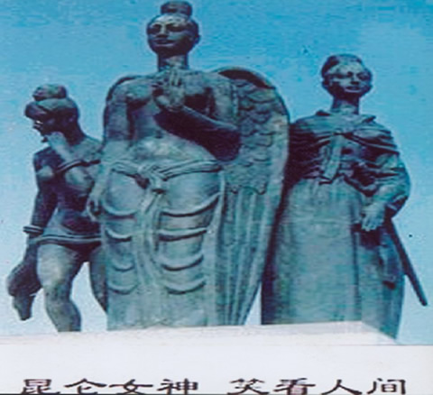

昆仑史曲 第二次天地大戰
三. 进军辽南，建立东都
英勇无比的西洋女王面对她众多妹妹与罗地的联合战团毫无畏惧，仍以排山倒海之势继续开展对南洋的进攻。茫茫夜空中，密密麻麻的“光点”一片又一片，铺天盖 地冲杀下来。

而中华战团却只派玄女的天龙军和普贤的白娘战团与其对阵佯战，并阻止其进印度洋。而这边，罗地和珠王、月娘挥师北进：罗刹战团绕过太平洋，偷袭西洋军后方进入日本、朝鲜和辽东地区；珠王战团和东海罗刹女战团从海下进军北洋地区； 青娘战团和小青娘战团从海面暗渡； 天鹰战团在痴羞女率领下在大洋上面布防以配合地、海战团作战。直到青娘战团和弯刀罗刹女战团抢先在辽南仙人岛登陆时，西洋女王属下的北洋守军才急忙组织力 量反扑过来，但为时已晚了---珠王战团也紧随着青娘战团赶到并很快就控制了仙人岛北的大部分地区，而且又有天鹰战团在上边控制着制空权。这样，罗地她们 便在辽南一带稳稳地站住了脚。
如今，那里的海边尚有一代天尊九天玄女和珠王圣母、青娘圣母的神像。
西王圣母只留下了白娘战团在南洋布防，她与玄女引军北上，在仙人岛与月娘、珠王、罗地会师，并在大青河畔水源丰盛的团甸（现属盖州）建立了大本营---东都。大军集中在大石桥附近的迷镇山。
| 上 一 頁 | 下 一 頁 | 回 主 頁 |